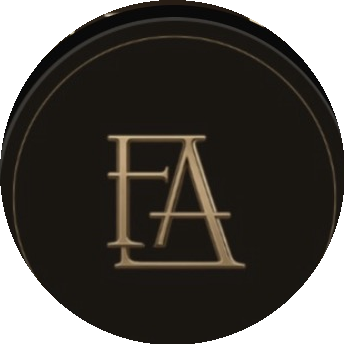

The Founder's ArchitectThe Founder's Architect is run by Magdalene van der Walt — a two-time Global Bookkeeping Firm of the Year winner, and a Sage-authorised accountant and advisor. What started as The Busy Bookkeeper has grown into a full business-architecture practice for founders.
"Your financial foundation is not paperwork — it's the structure everything else is built on." That's the thinking behind everything the practice does: compliance and reporting handled with the same care an architect gives a building's foundation.
You deal directly with Magdalene — no call centres, no handoffs. Your books live in Sage Business Cloud, visible any time you need them. And beyond the numbers, Founder Coaching and Founder Reset exist because building a business is as much an internal journey as an external one.
Two-time Global Bookkeeping Firm of the Year. Featured among KZN's Top Business Women. Sage-authorised accountants and advisors, Durban-based, serving founders nationally.